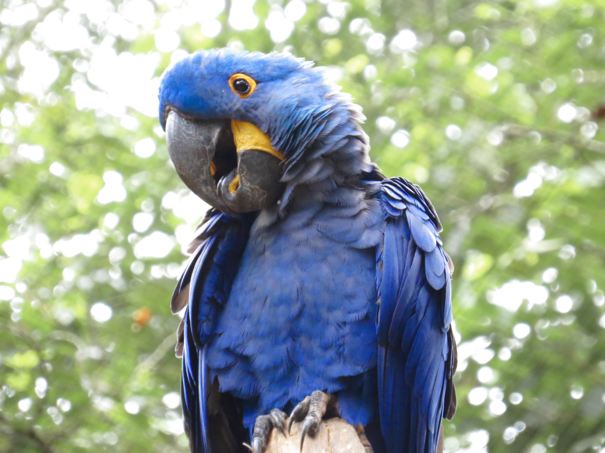
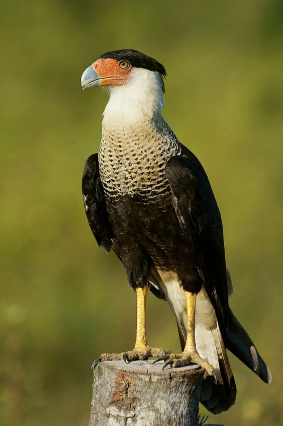
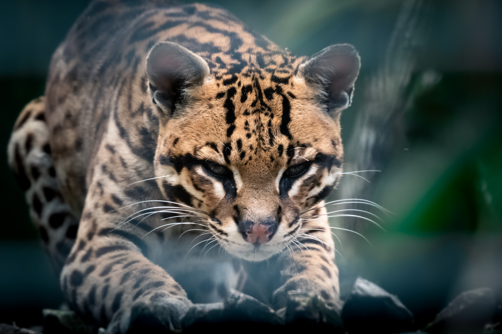
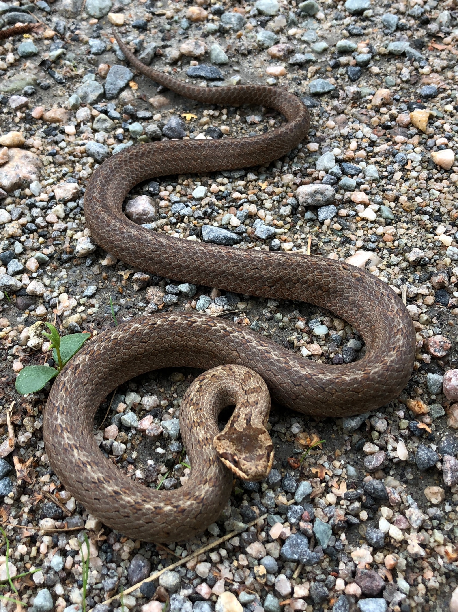
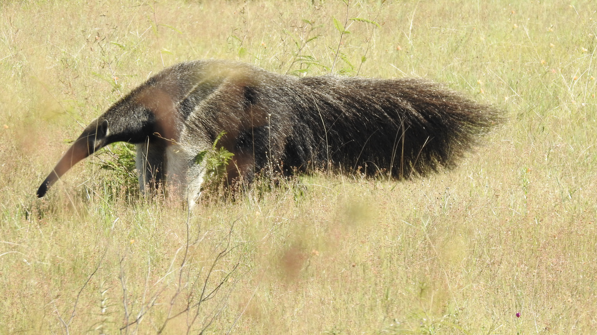

Animais do Sertão
- 
- 
- 
- 
-

- 
Arara Azul de Lear
Características: Chega até 75 centímetros de comprimento e pesa 940 gramas. É parecida com a arara-azul-grande (Anodorhynchus hyacinthinus), embora bem menor, sua plumagem é menos brilhante e a mancha amarela que ambas têm junto ao bico é maior na arara-azul-de-lear.
Hábitos: Alimenta-se basicamente de cocos da palmeira Licuri (Syagrus coronata). Saem de suas áreas de repouso ao amanhecer podendo se deslocar mais de 60 km para encontrar alimento. No final da tarde, podem ser vistas em bandos chegando de diversas direções, vocalizando e sobrevoando até acomodarem-se no paredão para dormir.
Curiosidades: Espécie endêmica do Brasil, é uma das aves mais raras do mundo.
Estado de conservação: Em perigo
Carcará
O carcará é facilmente reconhecível, quando pousado, pelo fato de ter um penacho preto sobre a cabeça parecido com um solidéu, assim como o bico adunco e alto, que se assemelha à lâmina de um cutelo; a face, chamada de cera, varia do vermelho ou laranja quando está calmo, ao amarelo quando está irritado, disputando território ou alimento.
em as costas recobertas de preto e, no peito, apresenta uma combinação de marrom claro com riscas pretas, de tipo carijó ou pedrês; suas patas são compridas e amarelas; em voo, assemelha-se a um urubu, mas é reconhecível porque sua cauda é mais longa e as asas são mais estreitas, com duas manchas de cor clara nas extremidades.
Não é um predador especializado e sim um generalista e oportunista. Onívoro, alimenta-se de quase tudo que acha, de animais vivos ou mortos até o lixo humano, tanto nas áreas rurais como urbanas. Suas estratégias para obtenção de alimento são variadas: caça pequenos vertebrados como sapos e serpentes, e invertebrados, como insetos e aracnídeos; rouba filhotes de outras aves; arranha o solo com os pés em busca de amendoim e feijão; apanha frutos de dendê; acompanha tratores a arar a terra, para capturar minhocas e outros invertebrados.
Jaguatirica
A jaguatirica é outra das espécies que vivem na caatinga e em outros tipos de biomas. O animal, da família felidae pode ter até 100 centímetros, sem contar com a cauda, que pode ter mais de 40 centímetros, e pesar quase 16 quilos. Os machos são mais pesados que as fêmeas.
A espécie é carnívora e caça à noite. A alimentação é composta principalmente de roedores, mas inclui répteis, aves, peixes e outros animais.
Jararaca do Sertão
Características: Uma serpente pequena. Seu tamanho não ultrapassa 60 cm.
Hábitos: Normalmente são encontradas em moitas de capins onde busca alimento e abrigo.
Estado de conservação: Pouco preocupante
Onça Parda
A onça-parda, também chamada de suçuarana e de leão-baio, é uma das espécies de animais que vivem tanto na caatinga como em outros biomas brasileiros. Na caatinga, o animal é considerado em perigo de extinção, apesar de não ser considerada e perigo em outros biomas. Apesar disso, o animal já não é visto em países da América do Norte, Central e do Sul.
mamífero é carnívoro e faz parte da família dos felinae, sendo a maior espécie da família. Ele pode ter até 155 centímetros de comprimento, sem contar com a cauda. O animal pode chegar a 72 quilos, sendo os machos, geralmente, mais pesados, e vivem em média de 7 a 9.
Estado de conservação: Preocupante
Tamanduá Bandeira
O tamanduá-bandeira é um mamífero que habita a caatinga e outros biomas brasileiros, além de países da América do Sul e Central. O mamífero pode ter de 1,8 a 2,1, sendo os machos mais pesados, chegando aos 41 quilos, e as fêmeas os 39 quilos.
O focinho alongado é a marca registrada desses animais. Essa característica auxilia na alimentação, que é feita quase totalmente de formigas e insetos. O animal é listado como "vulnerável", sendo que em algumas regiões do Brasil e em outros países já foi extinto.
Estado de conservação: Preocupante
FAQ
- Em qual fauna esses animais vivem?
- Na caatinga. O único bioma que só existe no Brasil.O bioma passa por todos os nove estados da região Nordeste, chegando até uma parte do estado de Minas Gerais, na região Sudeste. Ele ocupa cerca de 10% do território nacional, com mais de 850.000 quilômetros quadrados.
- Porque os animais estão em extição?
- A extinção pode ocorrer por vários motivos, dentre eles, destacam-se a destruição do habitat, competição, doenças, caça e matanças deliberadas, mudanças ambientais drásticas e catástrofes ambientais.
- O que deve ser feito para evitar a extinção dos animais?
- Para evitar a extinção dos animais é muito importante preservar a natureza, que é o habitat dos animais e de outros seres vivos. Para isso, é necessário barrar devastação, queimadas, poluição dos ambientes, seja por meio de sons ou de gases poluentes, além de abolir a exploração desordenada dos recursos naturais.